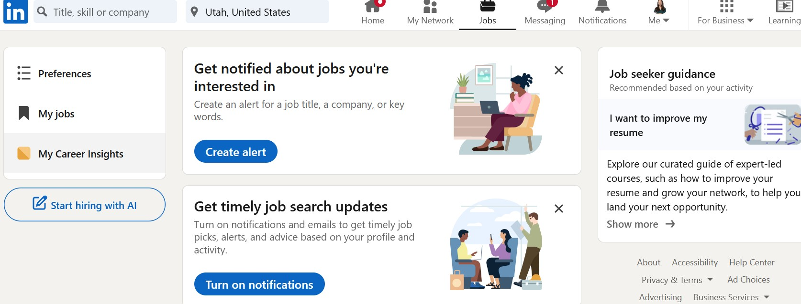
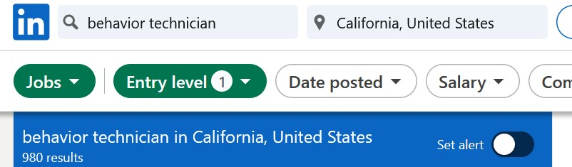
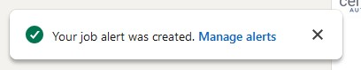
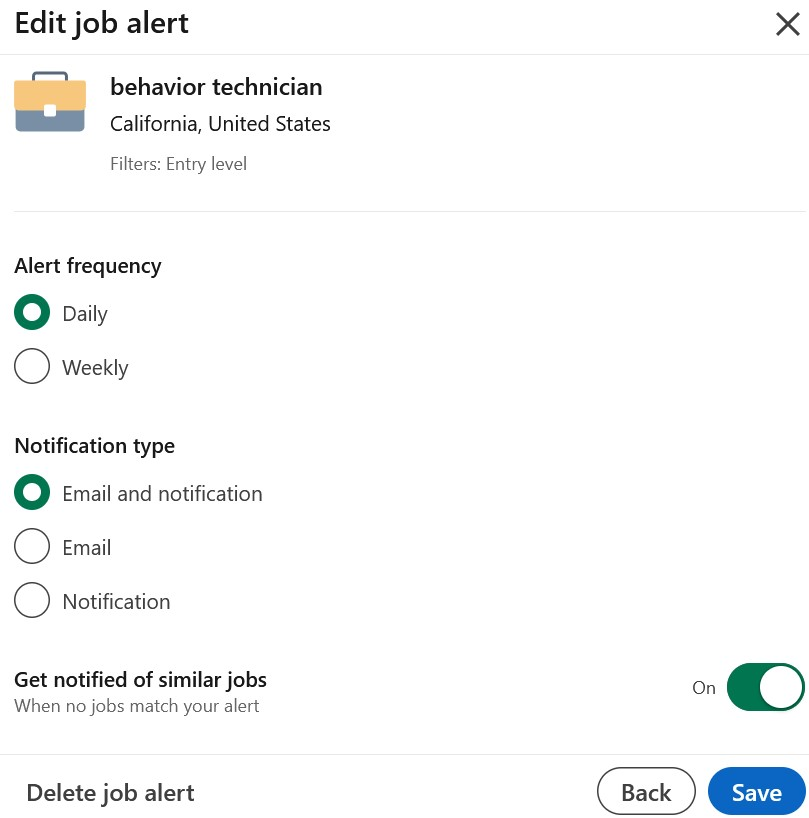
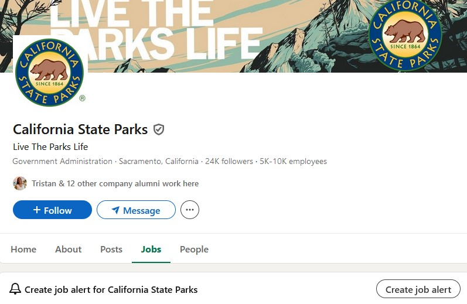

The Job Search Mindset
Finding a full-time job is an intensive process. It can be overwhelming yet exciting to see all of the possibilities for the next chapter of your life.
There’s an aspect of vulnerability in the job search. You’re summarizing all of the experiences and skills you believe are relevant to a position into a single application, submitting it, and waiting to be judged in a way that will could significantly changed your life.
Rejections are going to happen, or even worse, you won’t receive any response from an employer on the status of your application. As you go on this journey, a little advice:
Be…
- Open-minded: There could job titles or positions you may not be aware of that match your interests and/or skillset. You can focus your job search on a certain role, but read through job descriptions to make sure they’re aligning with your own career priorities. Try to expand your search to include titles that are adjacent to your interests. You can search or ask ChatGPT about suggested job titles based on your goals or current skill set.
- Cautious: In the face of mounting rejections or if the job search drags on, a reasonable reaction is to lower your standards for the type of position you’re willing to take on. While managing your expectations for an entry-level role is appropriate, accepting a position at a company that exploits desperate or naive job seekers may set you on an untowardly career path.
- Because there’s always going to be rent due at the end of the month, it’s okay to take on a temporary or part-time job.
- If there are restrictions on the types of positions you can work post-grad (i.e., international students), UCD students and alumni have access to GoinGlobal. They advertise resources for H1B visa holders.
- Patient (with yourself): Find ways to demonstrate kindness to yourself during this process. Stay connected with those who matter to you, build in moments of care or play into your everyday routine, and treat the job search as a part-time job. Dedicate time to the search, but once the job is done for the day, fill your time in other ways.
LinkedIn: Navigating the “Jobs” Section
Search Functionality

Go to LinkedIn and click on the “Jobs” tab on the top bar. This is where we will be conducting our job search. Throughout this section, we will be using different terms and referring to different components of LinkedIn search functions. A quick list defining these is below:
- Search box: Where you can input keywords or search terms (e.g., job titles)
- Search or job alert: Notifications you can set up for LinkedIn or your email that will send a summary of job postings from a previous job search.
- Job ad or posting: The actual description of a role posted by an employer, along with directions on how to apply.
Search Terms
To begin your search, you need to put in key words in the search box. This means knowing what types of roles you are interested in. Below is a sample set of keywords for different job types, generated from ChatGPT (OpenAI, 2024).
Here is what I asked ChatGPT, “What are some related keywords to a behavior technician position?”. It generated keywords related to the role I was interested in (Behavior Technician), skills, work environment, and more. For our purposes, we will use the ‘General Role Keywords’ to plug into our LinkedIn search. However, you can use the other keyword output as search terms too.
Additionally, the other keyword output could also be helpful when you’re trying to craft a resume as long as you’re accurately and honestly representing your skills and experiences. Sometimes recruiters and hiring managers use automated programs to filter resumes (for better or for worse cough cough), and so having relevant keywords in your resume could be helpful.
| Behavior Technician |
applied behavioral analysis, registered behavior technician, behavioral therapy, intervention specialist, autism spectrum disorder |
| Classroom Support |
classroom assistant, teacher’s aide, instructional assistant, paraprofessional, learning support |
A list of relevant, entry-level job titles can be found here (for Psychology) and here (for Cognitive Science). You can loop some of the titles listed into your search strategy.
The term ‘research’ in job search land is pretty broad. Across all fields and industries, there is research being done. This means when typing in “research” or any type of broad keyword, you will end up with a set of search results that are highly irrelevant. Mess around with your search terms and filters to see what produces relevant job positions.
Filtering
Depending on how narrow of search terms you are using, you may need to apply additional filters to produce a manageable output of results. Knowing your personal needs in a job search is also important for filtering. For example, you need to know what locations you’re willing to live and work at, and you can apply that preference via the “Location” under “All filters” or in the search box.
A breakdown of each of the available filters can be found on this LinkedIn help page. Review this, while keeping in mind the below information:
- Experience level: There are different levels of roles within a company based on experience (professional or educational). For most soon-to-graduate undergrads, “Entry level” positions are a close match for the roles you’ll be looking for. “Associate” titles are often reserved more senior roles requiring more experience. You can use the “Internship” level in your search, but it may show both paid and unpaid opportunities.
- Easy Apply: The “Easy Apply” button is only offered on some job postings, not all. It’s easy on the job seeker, as when you Easy Apply you do not need to switch to a new website and re-input a bunch of information. It means you can apply to a higher number of positions. The drawbacks are: (1) it’s harder to customize your application for a particular position; and (2) if applying is easy for you, it’s easier for other job applicants. This means you’ll likely be competing with a larger pool of applicants. Learn more about it here.
- Salary: Read below.
Applying filters can be helpful; however, the organizations and hiring teams posting jobs on LinkedIn vary greatly in the level of information they may put in their job ad that allows for easy filtering. For example, if you narrow your search by a certain salary level, this may leave out roles that do not have any pay information posted in their ad. This issue will differ between states with pay transparency laws being passed in recent years (learn more here).
Mess around with search terms and filters to see how changes to your search may produce differing results. For example, you can test what types of “Internship” opportunities crop up when you select “Internship” under “Experience Level”. The search could show a job opportunity that matches well with your goals (e.g., a paid internship that promises the chance of a full-time role in a company), so learn about the platform you’re using before limiting your search.
Setting Up Search Alerts
- Once you’ve input your desired search terms and applied your filters, you can click on “Set alert” at the top of the results to be directly notified of any new job postings. This is of use for more readily applying to new roles as they appear and reducing the need to completely re-do a search.

- After you have switched on the search alert, you will be receive on a pop-up message in the lower-left hand corner of your screen. From there you can click on “Manage alerts”, see your saved search on the screen (as indicated by the search key words and selected filters), click on the grey pencil, and then change the alert frequency (daily or weekly) and notification type (email and/or LinkedIn notification).
- You can get to this same screen from the “Jobs” homepage. Click on the “Jobs” tab in LinkedIn, click on “Preferences” on the left-hand side, and click on “Job alerts”.
 
- As mentioned earlier, if there’s an organization that you’re interested in, you can “Follow” an organization.
- You can either follow the people associated with the organization who may be likely to re-post job ads. You can find these by going to the ‘People’ tab. OR, to avoid spamming your homepage with strangers’ posts…
- You can go to the ‘Jobs’ page, click on ‘Create job alert’, and put in the type of roles you’re interested in and what locations you’d be open to working at. See the image below for an example.
- Be sure to review the types of positions that individuals under the ‘People’ tab may have that you’re interested in and determine where common work locations are (either what’s listed as the head quarters location under company’s name or in the ‘About’ tab).

Managing Search Alerts in Your Inbox
If you begin setting up all of these search alerts across different sites, your inbox may start getting overloaded with emails. You can filter any incoming emails from specified senders using “rules”. Gmail and Microsoft Outlook have different approaches on how to do this.
Being quick to apply is in your favor if a submission deadline is not specified. However, ensure you’re submitting quality materials for the application. We will not be covering crafting a resume in full for this workshop.
References
OpenAI. (2024). ChatGPT (December 19 version). OpenAI. https://openai.com